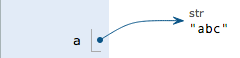

4-5 使用dict和set
dict
Python内置了字典：dict的支持，dict全称dictionary，在其他语言中也称为map，使用键-值（key-value）存储，具有极快的查找速度。
举个例子，假设要根据同学的名字查找对应的成绩，如果用list实现，需要两个list：
names = ['Michael', 'Bob', 'Tracy']
scores = [95, 75, 85]
给定一个名字，要查找对应的成绩，就先要在names中找到对应的位置，再从scores取出对应的成绩，list越长，耗时越长。
如果用dict实现，只需要一个“名字”-“成绩”的对照表，直接根据名字查找成绩，无论这个表有多大，查找速度都不会变慢。用Python写一个dict如下：
>>> d = {'Michael': 95, 'Bob': 75, 'Tracy': 85}
>>> d['Michael']
95
为什么dict查找速度这么快？因为dict的实现原理和查字典是一样的。假设字典包含了1万个汉字，我们要查某一个字，一个办法是把字典从第一页往后翻，直到找到我们想要的字为止，这种方法就是在list中查找元素的方法，list越大，查找越慢。
第二种方法是先在字典的索引表里（比如部首表）查这个字对应的页码，然后直接翻到该页，找到这个字，无论找哪个字，这种查找速度都非常快，不会随着字典大小的增加而变慢。
dict就是第二种实现方式，给定一个名字，比如'Michael'，dict在内部就可以直接计算出Michael对应的存放成绩的“页码”，也就是95这个数字存放的内存地址，直接取出来，所以速度非常快。
你可以猜到，这种key-value存储方式，在放进去的时候，必须根据key算出value的存放位置，这样，取的时候才能根据key直接拿到value。
把数据放入dict的方法，除了初始化时指定外，还可以通过key放入：
>>> d['Adam'] = 67
>>> d['Adam']
67
由于一个key只能对应一个value，所以，多次对一个key放入value，后面的值会把前面的值冲掉：
>>> d['Jack'] = 90
>>> d['Jack']
90
>>> d['Jack'] = 88
>>> d['Jack']
88
如果key不存在，dict就会报错：
>>> d['Thomas']
Traceback (most recent call last):
File "<stdin>", line 1, in <module>
KeyError: 'Thomas'
要避免key不存在的错误，有两种办法，一是通过in判断key是否存在：
>>> 'Thomas' in d
False
二是通过dict提供的get方法，如果key不存在，可以返回None，或者自己指定的value：
>>> d.get('Thomas')
>>> d.get('Thomas', -1)
-1
注意：返回None的时候Python的交互式命令行不显示结果。
要删除一个key，用pop(key)方法，对应的value也会从dict中删除：
>>> d.pop('Bob')
75
>>> d
{'Michael': 95, 'Tracy': 85}
请务必注意，dict内部存放的顺序和key放入的顺序是没有关系的。
和list比较，dict有以下几个特点：
- 查找和插入的速度极快，不会随着key的增加而增加；
- 需要占用大量的内存，内存浪费多。
而list相反：
- 查找和插入的时间随着元素的增加而增加；
- 占用空间小，浪费内存很少。 所以，dict是用空间来换取时间的一种方法。
dict可以用在需要高速查找的很多地方，在Python代码中几乎无处不在，正确使用dict非常重要，需要牢记的第一条就是dict的key必须是不可变对象。
这是因为dict根据key来计算value的存储位置，如果每次计算相同的key得出的结果不同，那dict内部就完全混乱了。这个通过key计算位置的算法称为哈希算法（Hash）。
要保证hash的正确性，作为key的对象就不能变。在Python中，字符串、整数等都是不可变的，因此，可以放心地作为key。而list是可变的，就不能作为key：
>>> key = [1, 2, 3]
>>> d[key] = 'a list'
Traceback (most recent call last):
File "<stdin>", line 1, in <module>
TypeError: unhashable type: 'list'
set
set和dict类似，也是一组key的集合，但不存储value。由于key不能重复，所以，在set中，没有重复的key。
要创建一个set，需要提供一个list作为输入集合：
>>> s = set([1, 2, 3])
>>> s
set([1, 2, 3])
注意，传入的参数[1, 2, 3]是一个list，而显示的set([1, 2, 3])只是告诉你这个set内部有1，2，3这3个元素，显示的[]不表示这是一个list。
重复元素在set中自动被过滤：
>>> s = set([1, 1, 2, 2, 3, 3])
>>> s
set([1, 2, 3])
通过add(key)方法可以添加元素到set中，可以重复添加，但不会有效果：
>>> s.add(4)
>>> s
set([1, 2, 3, 4])
>>> s.add(4)
>>> s
set([1, 2, 3, 4])
通过remove(key)方法可以删除元素：
>>> s.remove(4)
>>> s
set([1, 2, 3])
set可以看成数学意义上的无序和无重复元素的集合，因此，两个set可以做数学意义上的交集、并集等操作：
>>> s1 = set([1, 2, 3])
>>> s2 = set([2, 3, 4])
>>> s1 & s2
set([2, 3])
>>> s1 | s2
set([1, 2, 3, 4])
set和dict的唯一区别仅在于没有存储对应的value，但是，set的原理和dict一样，所以，同样不可以放入可变对象，因为无法判断两个可变对象是否相等，也就无法保证set内部“不会有重复元素”。试试把list放入set，看看是否会报错。
再议不可变对象
上面我们讲了，str是不变对象，而list是可变对象。
对于可变对象，比如list，对list进行操作，list内部的内容是会变化的，比如：
>>> a = ['c', 'b', 'a']
>>> a.sort()
>>> a
['a', 'b', 'c']
而对于不可变对象，比如str，对str进行操作呢：
>>> a = 'abc'
>>> a.replace('a', 'A')
'Abc'
>>> a
'abc'
虽然字符串有个replace()方法，也确实变出了'Abc'，但变量a最后仍是'abc'，应该怎么理解呢？
我们先把代码改成下面这样：
>>> a = 'abc'
>>> b = a.replace('a', 'A')
>>> b
'Abc'
>>> a
'abc'
要始终牢记的是，a是变量，而'abc'才是字符串对象！有些时候，我们经常说，对象a的内容是'abc'，但其实是指，a本身是一个变量，它指向的对象的内容才是'abc'：

当我们调用a.replace('a', 'A')时，实际上调用方法replace是作用在字符串对象'abc'上的，而这个方法虽然名字叫replace，但却没有改变字符串'abc'的内容。相反，replace方法创建了一个新字符串'Abc'并返回，如果我们用变量b指向该新字符串，就容易理解了，变量a仍指向原有的字符串'abc'，但变量b却指向新字符串'Abc'了：

所以，对于不变对象来说，调用对象自身的任意方法，也不会改变该对象自身的内容。相反，这些方法会创建新的对象并返回，这样，就保证了不可变对象本身永远是不可变的。
小结
使用key-value存储结构的dict在Python中非常有用，选择不可变对象作为key很重要，最常用的key是字符串。
tuple虽然是不变对象，但试试把(1, 2, 3)和(1, [2, 3])放入dict或set中，并解释结果。